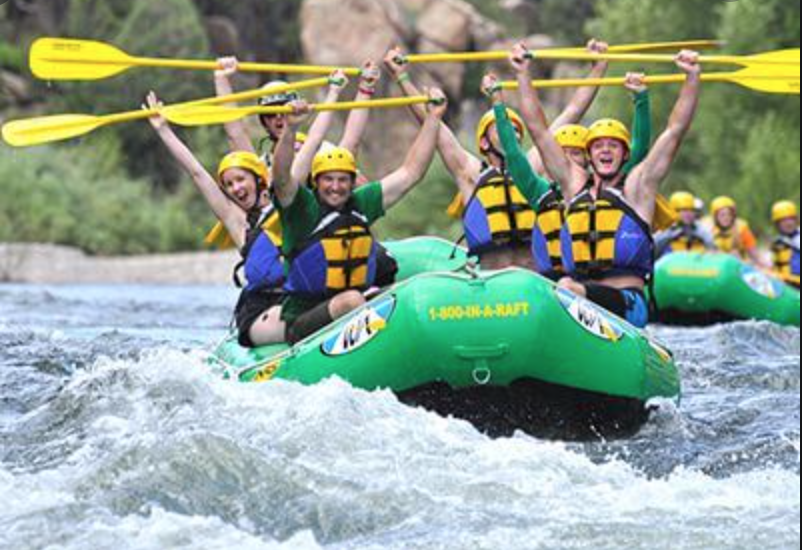
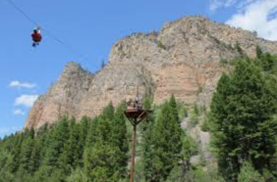

Services
Services
Enjoy a fun filled 20 miles of white water, swimming, water fighting, or hearing about river lore and history of the Salmon River. Experience a fun and exciting day with your friends and family with one of our knowledgeable guides.
What Is Included The best rafts and gear: After a 12 mile shuttle to Spring Bar you will get fitted in a life jacket and receive a brief river safety orientation from one of the guides. With MRO all of our rafts are top of the line along with all safety equipment. We use rafts that were designed for the best ride on the Salmon River, we will also have inflatable kayaks by request for those looking for a bit more personal adventure. Lunch: There will be a nice river side lunch served mid way through your trip. We pride ourselves on the freshest ingredients and provide an array of delicious items for everyone on the trip, we have gluten free and vegetarian options by request as well. White Water: The River is famous for its big drops and big waves with calm water in between to make for the perfect rafting adventure the whole family will enjoy. You can choose your adventure with the higher water flows and cooler water in the Spring May and June or the most popular warm water months of July, August and September.
Rottweilers

Nam quam nunc, blandit vel, luctus pulvinar, hendrerit id, lorem. Maecenas nec odio et ante tincidunt tempus. Donec vitae sapien ut libero venenatis faucibus. Nullam quis ante. Etiam sit amet orci eget eros faucibus tincidunt. Duis leo. Sed fringilla mauris sit amet nibh. Donec sodales sagittis magna.
Rutrum quisque non tellus orci ac auctor augue mauris augue. At consectetur lorem donec massa sapien. Turpis egestas maecenas pharetra convallis posuere morbi. Lectus arcu bibendum at varius. Elementum curabitur vitae nunc sed velit dignissim sodales. Ac turpis egestas maecenas pharetra convallis posuere morbi leo. Sed nisi lacus sed viverra tellus in hac habitasse platea. Ut tellus elementum sagittis vitae et leo duis. Aliquet risus feugiat in ante metus dictum at tempor commodo. Eu turpis egestas pretium aenean pharetra magna ac placerat. Sit amet mattis vulputate enim nulla.
Ziplining
Tour Highlights: Ziplining off our 80-ft. tower Climbing our sky ladder Walking on a sky bridge for a closer look of the River Ziplining from platform to platform – no hiking involved!